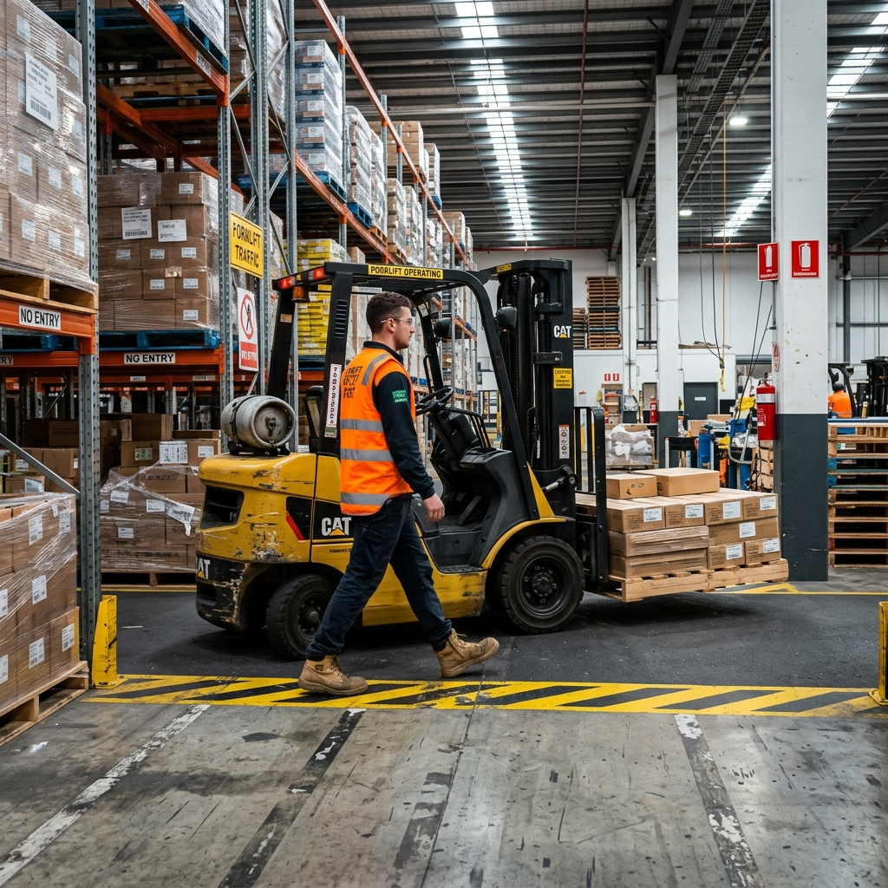
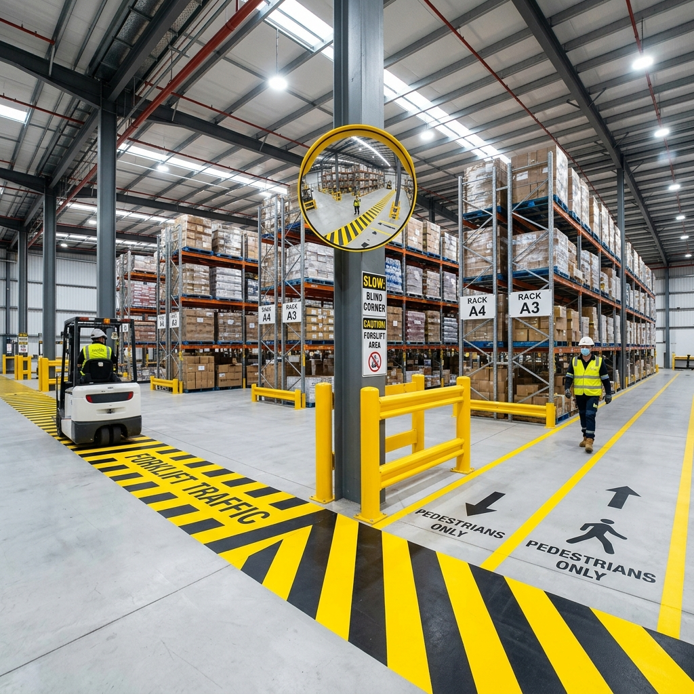

30분 통화만으로 현장 병목 가능성 3가지 즉시 진단
대전·충청 제조 현장 기준으로 설명드립니다.
매뉴얼이 작동하지 않는 진짜 이유는 작업자의 부주의가 아니라 구조적 결함 때문입니다.
속도가 최우선인 현장에서 동선이 꼬이면 작업자는 매뉴얼을 어기고 지름길을 택할 수밖에 없습니다.
'설비가 멈추면 손해'라는 압박 속에서, 작업자는 기계가 돌고 있는 상태로 손을 밀어 넣는 위험을 감수합니다.
표준 공정서가 없거나 맞지 않아, 고참 작업자의 '감'과 암묵지에 의존해 불안정한 품질과 안전을 유지합니다.
현장 이상 징후가 보고 라인을 타고 경영진까지 전달되는 데 시간이 지체되어 초기 골든타임을 놓치게 됩니다.
문제가 터졌을 때 구조가 아닌 '사람의 실수'로 꼬리 자르기를 반복하여 숨겨진 진짜 원인을 은폐합니다.
ISO 9001 / 14001 / 45001 통합 진단 및 컨설팅
공장 전체의 흐름을 막는 '진짜 병목'을 짚어내고, 불량을 구조적으로 차단하는 시스템을 구축합니다.
단순한 규제 대응을 넘어, 리스크를 비용 절감의 기회로 바꾸는 ESG 경영의 기초 체력을 다집니다.
작업자 정신 교육이 아닌, 공학적 통제(Fool-proof)와 안전 문화를 정착시켜 중대재해를 원천 봉쇄합니다.
20년간 비영리 조직을 운영하며 시스템의 언어를 다뤘습니다. 그리고 50대에, 직접 지게차를 몰았습니다.
현장은 저를 기다려주지 않았습니다. 적응하는 데 한 달, 하지만 재촉은 첫날부터였습니다.
그 경험이 저를 바꿨습니다. 규격보다 구조를 보게 됐고, 서류보다 흐름을 먼저 묻게 됐습니다.
글과 영상으로 증명하는 압도적인 통찰력
지게차 1.5년 실무 경험으로 분석한 물류 현장의 치명적 병목 구간 해소 전략입니다.


무의미한 서류 작업에 지치셨나요?
RISA™가 구조를 바꿔드립니다.
혹시 이런 고민을 하고 계신가요?